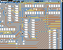
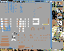
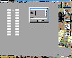
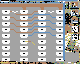
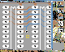
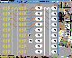
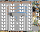
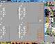

|
|
PCBAmiga, screen shots. By Lee Davison. |
|
Here are some screen shots taken from PCBAmiga. They appear to be on a 16 colour Workbench screen so are from before I got the '060 and Picasso IV.
 PCB, Zoom level 2 PCB, Zoom level 4  Parts pic'n'mix Loading a library  Chosing a symbol  Track rubberband  Placing a pad  Placing a symbol  Entering text  Schematic design
| Last page update: 13th August, 2003. |
e-mail me
 |